<!DOCTYPE lake>
<h2 data-lake-id="vyMDQ" id="vyMDQ"><span data-lake-id="u1912aa3b" id="u1912aa3b">学习目标</span></h2><ul list="ucb54790b"><li data-lake-id="ub50ce4ab" fid="u1193e44a" id="ub50ce4ab"><span data-lake-id="uaf0cab30" id="uaf0cab30">能够搭建lvgl模拟器开发环境   </span></li></ul><h2 data-lake-id="vJhWl" id="vJhWl"><span data-lake-id="u98f88c69" id="u98f88c69">学习内容</span></h2><h3 data-lake-id="FOp7K" id="FOp7K"><span data-lake-id="u3cb38294" id="u3cb38294">项目源码准</span></h3><p data-lake-id="u478a777a" id="u478a777a"><span data-lake-id="uaa6fc70f" id="uaa6fc70f">模拟器列表： </span><a data-lake-id="u2cd1482e" href="https://sim.lvgl.io/" id="u2cd1482e" rel="noopener noreferrer" target="_blank"><span data-lake-id="u14a14dd9" id="u14a14dd9">https://sim.lvgl.io/</span></a></p><p data-lake-id="u079ab6a7" id="u079ab6a7"><span data-lake-id="u95106d18" id="u95106d18">8.3版本模拟器： </span><a data-lake-id="ubf3c4f0f" href="https://sim.lvgl.io/v8.3/micropython/ports/javascript/index.html" id="ubf3c4f0f" rel="noopener noreferrer" target="_blank"><span data-lake-id="u5c09727a" id="u5c09727a">https://sim.lvgl.io/v8.3/micropython/ports/javascript/index.html</span></a></p><h4 data-lake-id="Dfdt7" id="Dfdt7"><span data-lake-id="u578dd249" id="u578dd249">下载模拟器项目</span></h4><p data-lake-id="ub1c8271f" id="ub1c8271f"><a data-lake-id="u3ed24a3c" href="https://github.com/lvgl/lv_port_pc_eclipse/tree/release/v8.3" id="u3ed24a3c" rel="noopener noreferrer" target="_blank"><span data-lake-id="ube16513d" id="ube16513d">https://github.com/lvgl/lv_port_pc_eclipse/tree/release/v8.3</span></a></p><p data-lake-id="u4fb136b4" id="u4fb136b4"><a data-lake-id="u57ef68f1" href="https://github.com/lvgl/lv_port_pc_eclipse/tree/release/v9.3" id="u57ef68f1" rel="noopener noreferrer" target="_blank"><span data-lake-id="u76881fc4" id="u76881fc4">https://github.com/lvgl/lv_port_pc_eclipse/tree/release/v9.3</span></a></p><p data-lake-id="uc48c4fe3" id="uc48c4fe3"><a data-lake-id="ufb3033e7" href="https://github.com/lvgl/lv_port_pc_vscode/tree/release/v9.3" id="ufb3033e7" rel="noopener noreferrer" target="_blank"><span data-lake-id="ubaf74911" id="ubaf74911">https://github.com/lvgl/lv_port_pc_vscode/tree/release/v9.3</span></a></p><p data-lake-id="ub0dde478" id="ub0dde478">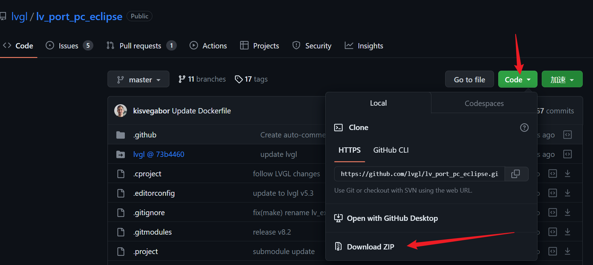</p><h4 data-lake-id="CrTeG" id="CrTeG"><span data-lake-id="ua67a6d92" id="ua67a6d92">下载lvgl源码</span></h4><p data-lake-id="uce593f52" id="uce593f52"><a data-lake-id="u49a6213b" href="https://github.com/lvgl/lvgl/tree/release/v8.3" id="u49a6213b" rel="noopener noreferrer" target="_blank"><span data-lake-id="u18a1329f" id="u18a1329f">https://github.com/lvgl/lvgl/tree/release/v8.3</span></a></p><p data-lake-id="u619c4339" id="u619c4339"><a data-lake-id="ue885f53a" href="https://github.com/lvgl/lvgl/tree/release/v9.3" id="ue885f53a" rel="noopener noreferrer" target="_blank"><span data-lake-id="u30a3645e" id="u30a3645e">https://github.com/lvgl/lvgl/tree/release/v9.3</span></a></p><p data-lake-id="u9a9e157c" id="u9a9e157c"><br/></p><p data-lake-id="u500af81a" id="u500af81a">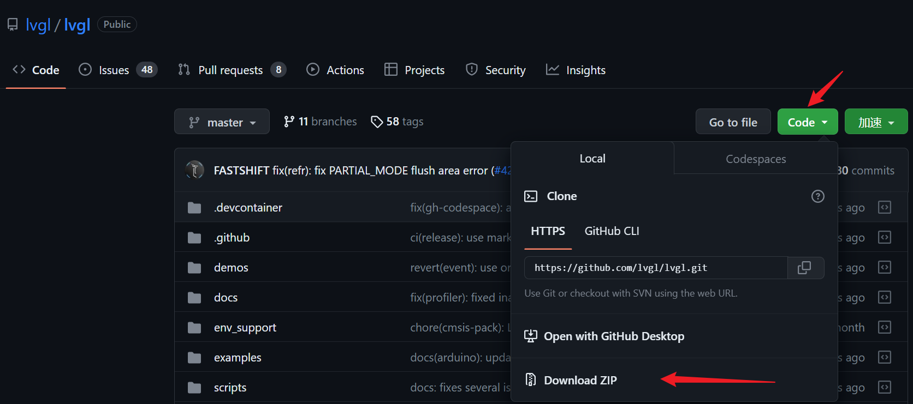</p><h4 data-lake-id="x6HlD" id="x6HlD"><span data-lake-id="uab157fb0" id="uab157fb0">下载lvgl drivers源码 </span></h4><ul list="u2357ffb5"><li data-lake-id="ua34781ec" fid="u7944fa7e" id="ua34781ec"><span data-lake-id="u3009b3cb" id="u3009b3cb">(v8.3版本需要)</span></li></ul><p data-lake-id="ub1e1138a" id="ub1e1138a"><a data-lake-id="u86ac1a9d" href="https://github.com/lvgl/lv_drivers/tree/release/v8.3" id="u86ac1a9d" rel="noopener noreferrer" target="_blank"><span data-lake-id="u13baff21" id="u13baff21">https://github.com/lvgl/lv_drivers/tree/release/v8.3</span></a></p><p data-lake-id="ua34a6e8b" id="ua34a6e8b">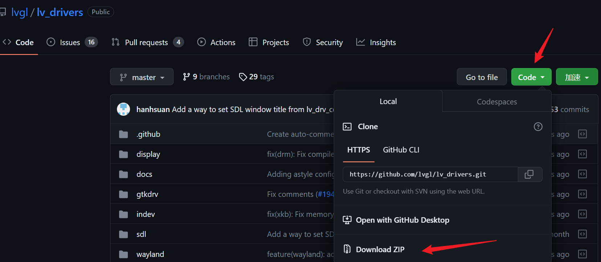</p><h4 data-lake-id="pnjlq" id="pnjlq"><span data-lake-id="ud8e41820" id="ud8e41820">新建工程</span></h4><ol list="u2ae06bc6"><li data-lake-id="ud43c5450" fid="u43228ff3" id="ud43c5450"><span data-lake-id="uae212f83" id="uae212f83">创建目录</span><code data-lake-id="u9494fead" id="u9494fead"><span data-lake-id="u82a4bb97" id="u82a4bb97">lvgl_simulator</span></code><span data-lake-id="ub5ee0b4a" id="ub5ee0b4a">,将此目录作为项目目录.</span></li><li data-lake-id="u78227df3" fid="u43228ff3" id="u78227df3"><span data-lake-id="u7ec3353e" id="u7ec3353e">将 </span><code data-lake-id="u9974e959" id="u9974e959"><span data-lake-id="u52bdb333" id="u52bdb333">lv_port_pc_eclipse_master.zip</span></code><span data-lake-id="u75d2b935" id="u75d2b935">的内容解压到</span><code data-lake-id="u95a72696" id="u95a72696"><span data-lake-id="uc315dc50" id="uc315dc50">项目目录</span></code><span data-lake-id="u497101fa" id="u497101fa">.</span></li><li data-lake-id="u5ec2c59f" fid="u43228ff3" id="u5ec2c59f"><span data-lake-id="u63899862" id="u63899862">将</span><code data-lake-id="ub8363d91" id="ub8363d91"><span data-lake-id="u833e1565" id="u833e1565">lvgl_master.zip</span></code><span data-lake-id="u42f68f3d" id="u42f68f3d">解压，重命名为</span><code data-lake-id="u0e82bfdd" id="u0e82bfdd"><span data-lake-id="u9fa63813" id="u9fa63813">lvgl</span></code><span data-lake-id="u001ff89c" id="u001ff89c">，然后移动到</span><code data-lake-id="u5c3efe03" id="u5c3efe03"><span data-lake-id="ufb00d52d" id="ufb00d52d">项目目录</span></code><span data-lake-id="u5bfb6cfc" id="u5bfb6cfc">中.</span></li><li data-lake-id="uc01503c9" fid="u43228ff3" id="uc01503c9"><span data-lake-id="u7cff2b14" id="u7cff2b14">将</span><code data-lake-id="u5ff87e84" id="u5ff87e84"><span data-lake-id="u21c4b98e" id="u21c4b98e">lv_drivers_master.zip</span></code><span data-lake-id="u84d409ef" id="u84d409ef">解压，重命名为</span><code data-lake-id="u2af6c755" id="u2af6c755"><span data-lake-id="u7023d8a2" id="u7023d8a2">lv_drivers</span></code><span data-lake-id="u43aa46f9" id="u43aa46f9">,然后移动到</span><code data-lake-id="u5f6701f1" id="u5f6701f1"><span data-lake-id="u9c6a41b5" id="u9c6a41b5">项目目录</span></code><span data-lake-id="udf5918c2" id="udf5918c2">中.</span></li></ol><p data-lake-id="u6dc0bd75" id="u6dc0bd75"><span data-lake-id="u8a41bc08" id="u8a41bc08">操作完成后，目录结构如下：</span></p><p data-lake-id="u52933cf4" id="u52933cf4">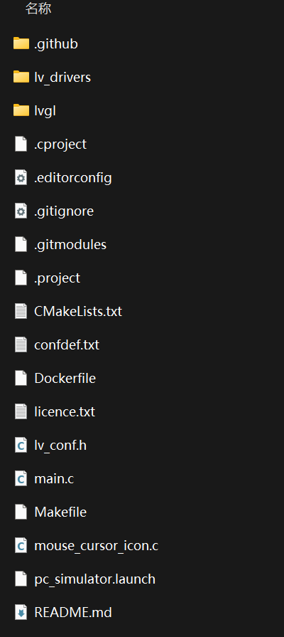</p><p data-lake-id="ub9eec36a" id="ub9eec36a"><br/></p><h3 data-lake-id="kNife" id="kNife"><span data-lake-id="uc9a44a8e" id="uc9a44a8e">配置</span><span class="lake-fontsize-12" data-lake-id="u04210224" id="u04210224" style="color: rgb(55, 65, 81); background-color: rgb(247, 247, 248)">MinGW</span><span data-lake-id="u8741d952" id="u8741d952">环境</span></h3><p data-lake-id="ucde91c87" id="ucde91c87"><span class="lake-fontsize-12" data-lake-id="u764108a5" id="u764108a5" style="color: rgb(55, 65, 81); background-color: rgb(247, 247, 248)">MinGW（Minimalist GNU for Windows）是一个在Windows平台上开发和运行本地（native）应用程序的开发工具集。MinGW的目标是提供一个轻量级、最小化的GNU工具集，使开发者能够在Windows环境下使用类Unix的工具和编程环境。</span></p><p data-lake-id="u5682ab4a" id="u5682ab4a"><span class="lake-fontsize-12" data-lake-id="ua652544f" id="ua652544f" style="color: rgb(55, 65, 81); background-color: rgb(247, 247, 248)">MinGW的主要组成部分包括：</span></p><ol list="u6598a863"><li data-lake-id="u3d6b971d" fid="u462b3653" id="u3d6b971d"><strong><span class="lake-fontsize-12" data-lake-id="u7621a768" id="u7621a768" style="color: var(--tw-prose-bold); background-color: rgb(247, 247, 248)">GCC（GNU Compiler Collection）：</span></strong><span class="lake-fontsize-12" data-lake-id="u54e317ac" id="u54e317ac" style="color: rgb(55, 65, 81); background-color: rgb(247, 247, 248)"> 一个强大的编译器套件，包括C、C++、Fortran等语言的编译器。</span></li><li data-lake-id="ub6ac5769" fid="u462b3653" id="ub6ac5769"><strong><span class="lake-fontsize-12" data-lake-id="ufdd0ec7d" id="ufdd0ec7d" style="color: var(--tw-prose-bold); background-color: rgb(247, 247, 248)">Binutils：</span></strong><span class="lake-fontsize-12" data-lake-id="u96ebee92" id="u96ebee92" style="color: rgb(55, 65, 81); background-color: rgb(247, 247, 248)"> 一组用于处理二进制文件的工具，包括汇编器、链接器等。</span></li><li data-lake-id="u6c898da9" fid="u462b3653" id="u6c898da9"><strong><span class="lake-fontsize-12" data-lake-id="u8975baea" id="u8975baea" style="color: var(--tw-prose-bold); background-color: rgb(247, 247, 248)">MSYS（Minimal SYStem）：</span></strong><span class="lake-fontsize-12" data-lake-id="ufcbcc93f" id="ufcbcc93f" style="color: rgb(55, 65, 81); background-color: rgb(247, 247, 248)"> 一个提供类Unix shell环境的工具，使得在Windows环境下使用GNU工具更为方便。</span></li></ol><p data-lake-id="udce8fe95" id="udce8fe95"><span class="lake-fontsize-12" data-lake-id="u93f6b323" id="u93f6b323" style="color: rgb(55, 65, 81); background-color: rgb(247, 247, 248)">MinGW的主要目标是让开发者能够在Windows上使用开源和跨平台的软件开发工具，而无需依赖于Microsoft Visual Studio等闭源工具。使用MinGW，开发者可以编写和编译与Windows API无关的本地应用程序，这对于跨平台开发和移植代码至Windows平台是非常有用的。</span></p><p data-lake-id="uf0197d84" id="uf0197d84"><span data-lake-id="u6d84a89f" id="u6d84a89f">​</span><br/></p><p data-lake-id="u1bc367d9" id="u1bc367d9"><span data-lake-id="u8dd07de3" id="u8dd07de3">从网盘中下载</span><span class="lake-fontsize-12" data-lake-id="ucb027c7f" id="ucb027c7f" style="color: rgb(55, 65, 81); background-color: rgb(247, 247, 248)">MinGW之后，解压，然后将它的路径配置到系统的环境变量中</span></p><p data-lake-id="u43cb88ec" id="u43cb88ec"><span data-lake-id="u41dc3ca6" id="u41dc3ca6">通过网盘分享的文件：lvgl</span></p><p data-lake-id="uad4849af" id="uad4849af"><span data-lake-id="uadcc6ad9" id="uadcc6ad9">链接: </span><a data-lake-id="u19aaf9cb" href="https://pan.baidu.com/s/1QjK4r-I3xIfSnTMZyf5-lQ?pwd=6666" id="u19aaf9cb" rel="noopener noreferrer" target="_blank"><span data-lake-id="ue2d8ba8d" id="ue2d8ba8d">https://pan.baidu.com/s/1QjK4r-I3xIfSnTMZyf5-lQ?pwd=6666</span></a><span data-lake-id="ua51414ba" id="ua51414ba"> 提取码: 6666</span></p><p data-lake-id="u02d8e508" id="u02d8e508"><span data-lake-id="u8e8c9686" id="u8e8c9686">​</span><br/></p><h4 data-lake-id="FtIMy" data-lake-index-type="2" id="FtIMy"><span data-lake-id="u31998261" id="u31998261">解压缩</span></h4><p data-lake-id="ufadfd330" id="ufadfd330"><span data-lake-id="u066d8628" id="u066d8628">例如，我将mingw64解压缩到我电脑的开发工具安装目录</span><strong><span data-lake-id="u73dbf603" id="u73dbf603">(</span></strong><span data-lake-id="u5e52e265" id="u5e52e265">注意:非中文非空格 比如:</span><strong><span data-lake-id="ubbe35e54" id="ubbe35e54">C:\devtools\mingw64)</span></strong></p><p data-lake-id="u5ff9bb2f" id="u5ff9bb2f">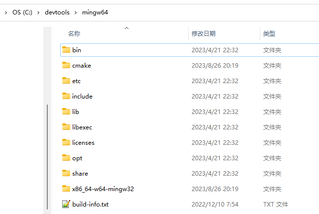</p><p data-lake-id="u15744b21" id="u15744b21"><br/></p><h4 data-lake-id="DzzQv" data-lake-index-type="2" id="DzzQv"><span data-lake-id="u5afc422b" id="u5afc422b">配置环境变量</span></h4><p data-lake-id="u89a152f7" id="u89a152f7"><span data-lake-id="u90771af8" id="u90771af8">编辑系统环境变量：Path</span></p><p data-lake-id="u3dd08b86" id="u3dd08b86">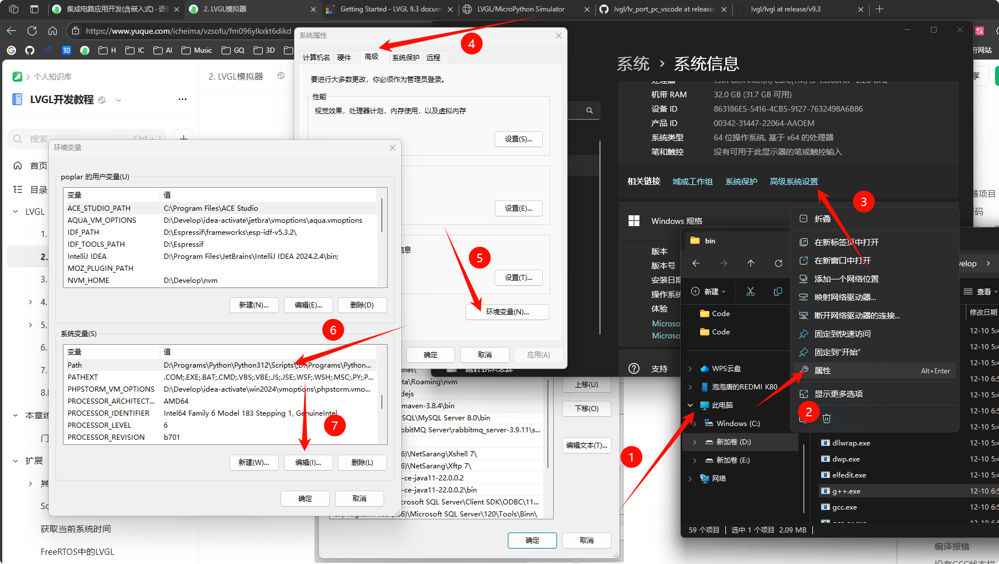</p><p data-lake-id="u9760bc5a" id="u9760bc5a"><span data-lake-id="ucb9606ba" id="ucb9606ba">新建一行</span></p><p data-lake-id="u9ae3a3e4" id="u9ae3a3e4">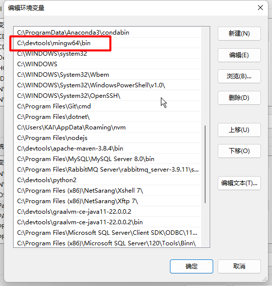</p><p data-lake-id="u1a161473" id="u1a161473"><span data-lake-id="ua78d8616" id="ua78d8616">推荐添加如下两行配置, </span><code data-lake-id="ud27e3e94" id="ud27e3e94"><span data-lake-id="ud5c43b13" id="ud5c43b13">D:\Develop</span></code><span data-lake-id="u8381af93" id="u8381af93">是我自己的解压目录, 具体路径取决于你的mingw解压目录</span></p><span class="yuque-card-unsupported">[codeblock]</span><h4 data-lake-id="y5UIO" data-lake-index-type="2" id="y5UIO"><span data-lake-id="u09072edb" id="u09072edb">验证环境</span></h4><p data-lake-id="u54f18a49" id="u54f18a49"><span data-lake-id="uea621f6e" id="uea621f6e">使用where命令，可以验证当前配置是否正确</span></p><p data-lake-id="udf9284ed" id="udf9284ed">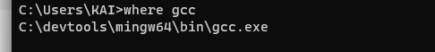</p><p data-lake-id="u7213ffae" id="u7213ffae"><span data-lake-id="u4a0b39a1" id="u4a0b39a1">查看gcc版本: </span><code data-lake-id="uf1195e0f" id="uf1195e0f"><span data-lake-id="ue33ea8a5" id="ue33ea8a5">gcc -v</span></code></p><p data-lake-id="u3cab5e84" id="u3cab5e84">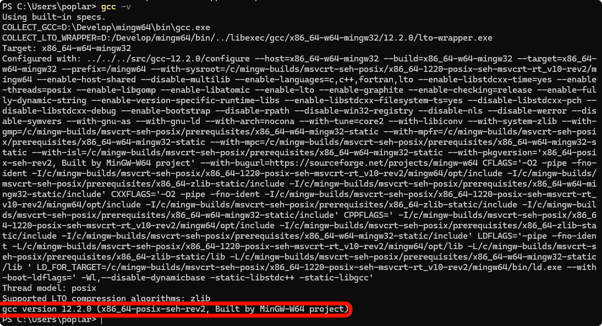</p><h3 data-lake-id="MYzX5" id="MYzX5"><span data-lake-id="uadb7290e" id="uadb7290e">安装CMake</span></h3><p data-lake-id="ub8565e33" id="ub8565e33"><a data-lake-id="uafdd7f89" href="https://cmake.org/download/" id="uafdd7f89" rel="noopener noreferrer" target="_blank"><span data-lake-id="u5f1d17ad" id="u5f1d17ad">https://cmake.org/download/</span></a></p><p data-lake-id="uc38a01ef" id="uc38a01ef"><span data-lake-id="ufeedec2d" id="ufeedec2d">下载cmake安装包并安装，注意将cmake添加至环境变量。</span></p><p data-lake-id="udf4bcef8" id="udf4bcef8">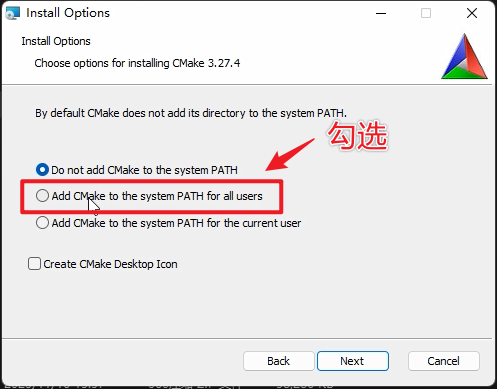</p><p data-lake-id="u243b9aa0" id="u243b9aa0"><span data-lake-id="u1e34e9fc" id="u1e34e9fc">验证安装成功：</span><code data-lake-id="ua18cbab7" id="ua18cbab7"><span data-lake-id="u6dcd0d5a" id="u6dcd0d5a">cmake --version</span></code></p><p data-lake-id="uf376c6f5" id="uf376c6f5">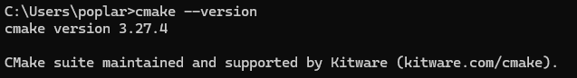</p><h3 data-lake-id="EG2nM" id="EG2nM"><br/></h3><h3 data-lake-id="A8Xsd" id="A8Xsd"><span data-lake-id="u4b6237f0" id="u4b6237f0">使用VSCode编译运行</span></h3><h4 data-lake-id="Esn2Y" data-lake-index-type="2" id="Esn2Y"><span data-lake-id="u2f1a935a" id="u2f1a935a">安装c/c++插件</span></h4><ul list="u86400a34"><li data-lake-id="u60f6c00d" fid="ueaac0c54" id="u60f6c00d"><span data-lake-id="u6f7f7b23" id="u6f7f7b23">C/C++ Extension Pack</span></li><li data-lake-id="u6c3757ee" fid="ueaac0c54" id="u6c3757ee"><span data-lake-id="uf8600b87" id="uf8600b87">CMake Tools</span></li></ul><p data-lake-id="ud3f1f6ce" id="ud3f1f6ce">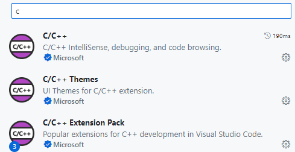</p><p data-lake-id="ufd2f82bd" id="ufd2f82bd"></p><p data-lake-id="uc4cf9656" id="uc4cf9656"></p><p data-lake-id="u10f1e7b2" id="u10f1e7b2"><span data-lake-id="u45c85eab" id="u45c85eab">安装完插件之后，可以对cmake-tools进行简单配置，让他把底部状态栏显示出来</span></p><p data-lake-id="u5428376d" id="u5428376d">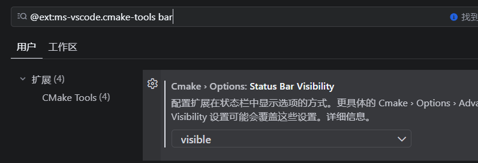</p><p data-lake-id="uce42de05" id="uce42de05"><br/></p><p data-lake-id="u93a2b688" id="u93a2b688"><br/></p><h4 data-lake-id="RJ4CJ" data-lake-index-type="2" id="RJ4CJ"><span data-lake-id="uf9858104" id="uf9858104">通过VSCode工具打开准备好的源码目录</span></h4><p data-lake-id="ufe5fc2e1" id="ufe5fc2e1">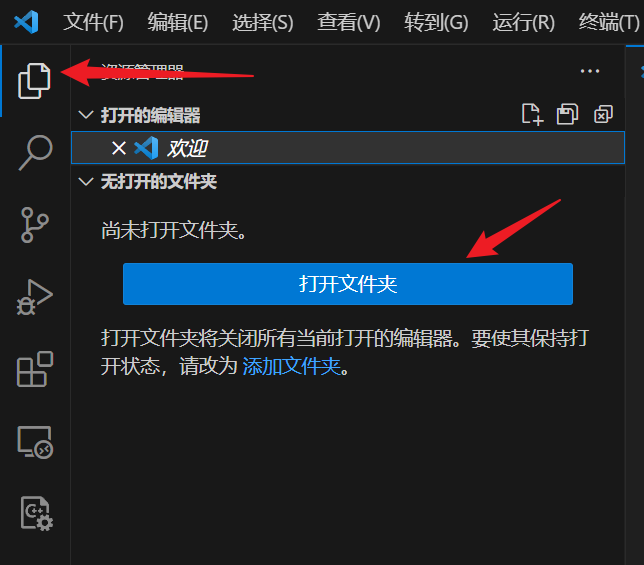</p><p data-lake-id="uac1f44ac" id="uac1f44ac">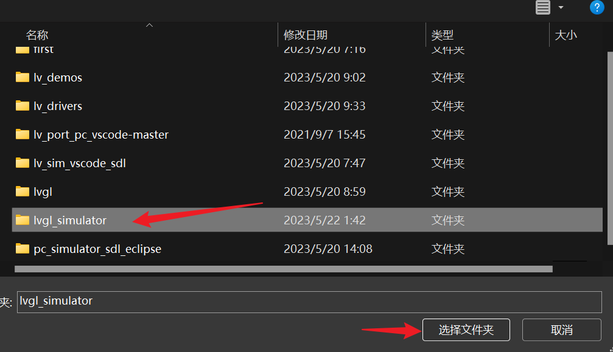</p><h4 data-lake-id="HtRhk" data-lake-index-type="2" id="HtRhk"><span data-lake-id="uc9e44b9d" id="uc9e44b9d">编译源代码</span></h4><p data-lake-id="u4ab31453" id="u4ab31453"><span data-lake-id="u7196e043" id="u7196e043">打开后，默认会编译一次，如下图</span></p><p data-lake-id="u43aad3d3" id="u43aad3d3">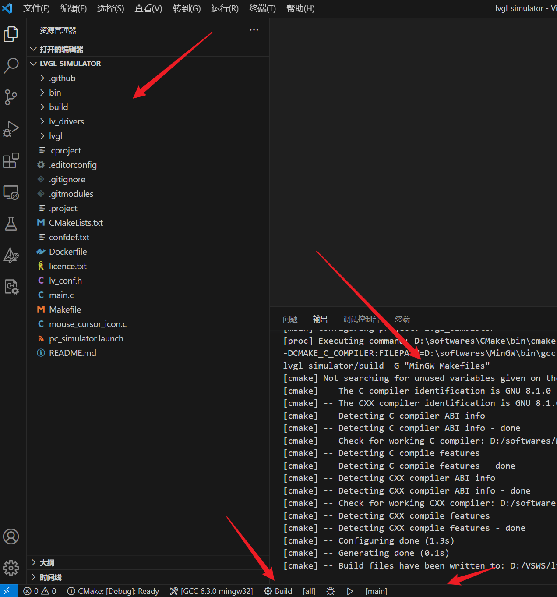</p><ul list="u90c0ee99"><li data-lake-id="u3abb07e9" fid="uf0fc13b4" id="u3abb07e9"><span data-lake-id="ue65ac83e" id="ue65ac83e">左侧是源码目录结构</span></li><li data-lake-id="uc7432c7f" fid="uf0fc13b4" id="uc7432c7f"><span data-lake-id="ubf5da83b" id="ubf5da83b">右侧输出为编译信息</span></li><li data-lake-id="u373dcbd0" fid="uf0fc13b4" id="u373dcbd0"><span data-lake-id="ube953e0f" id="ube953e0f">下方是操作面板</span></li></ul><p data-lake-id="ue43a4f17" id="ue43a4f17"><span data-lake-id="u9453fd0f" id="u9453fd0f">操作面板中有：</span></p><ul list="ue3a70b0c"><li data-lake-id="ub9815751" fid="u11f7dc6b" id="ub9815751"><span data-lake-id="u283b2547" id="u283b2547">CMake配置</span></li><li data-lake-id="ufe38e150" fid="u11f7dc6b" id="ufe38e150"><span data-lake-id="u3c477978" id="u3c477978">GCC配置</span></li><li data-lake-id="u8a711527" fid="u11f7dc6b" id="u8a711527"><span data-lake-id="u7aaf8d26" id="u7aaf8d26">Build对源码进行编译</span></li><li data-lake-id="u38dcede6" fid="u11f7dc6b" id="u38dcede6"><span data-lake-id="uc3ff1788" id="uc3ff1788">三角形为运行按钮</span></li></ul><p data-lake-id="u1064c242" id="u1064c242"><span data-lake-id="ub756a94f" id="ub756a94f">如果GCC配置部分为空，点击GCC方面进行配置</span></p><h4 data-lake-id="yfr8A" data-lake-index-type="2" id="yfr8A"><span data-lake-id="ua2fdcbff" id="ua2fdcbff">拷贝依赖并运行</span></h4><p data-lake-id="u92a40b67" id="u92a40b67"><span data-lake-id="ubb405986" id="ubb405986">点击Build对源码进行编译，编译完成后，会多出</span><code data-lake-id="u712a2893" id="u712a2893"><span data-lake-id="ub2e98b94" id="ub2e98b94">bin</span></code><span data-lake-id="u8d8c9ab9" id="u8d8c9ab9">和</span><code data-lake-id="u69a90262" id="u69a90262"><span data-lake-id="u23b034c8" id="u23b034c8">build</span></code><span data-lake-id="u9748ce93" id="u9748ce93">目录，</span><strong><span data-lake-id="ue21ae529" id="ue21ae529">将mingw64\x86_64-w64-mingw32\bin里的SDL2.dll拷贝到bin这个目录</span></strong><span data-lake-id="ua33964eb" id="ua33964eb">中。</span></p><p data-lake-id="ubd563501" id="ubd563501">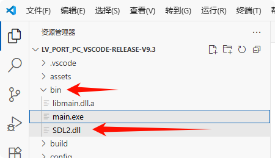</p><p data-lake-id="u60b95b1f" id="u60b95b1f"><span data-lake-id="u7c1acf55" id="u7c1acf55">然后点击下方栏目三角形的运行按钮</span></p><p data-lake-id="u9b3807d7" id="u9b3807d7">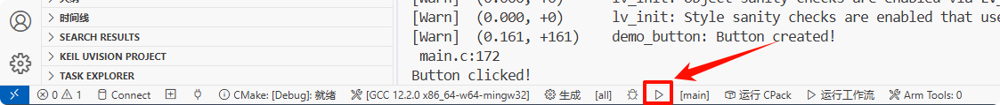</p><p data-lake-id="u77d2ed97" id="u77d2ed97"><span data-lake-id="uacd7fb20" id="uacd7fb20">运行结果如下：</span></p><p data-lake-id="u8592d9a2" id="u8592d9a2"></p><h3 data-lake-id="fd6BC" id="fd6BC"><span data-lake-id="ub5c992a7" id="ub5c992a7">SDL环境准备（选做）</span></h3><p data-lake-id="u19e420d5" id="u19e420d5"><span data-lake-id="ubb74c7de" id="ubb74c7de" style="color: rgb(51, 51, 51)">Simple DirectMedia Layer是一个跨平台开发库，旨在通过OpenGL和Direct3D提供对音频、键盘、鼠标、操纵杆和图形硬件的低级别访问。它被视频播放软件、模拟器和流行游戏使用，包括Valve的获奖目录和许多Humble Bundle游戏。</span></p><p data-lake-id="u2fc80909" id="u2fc80909"><span data-lake-id="u69fb30d5" id="u69fb30d5" style="color: rgb(51, 51, 51)">如果编译过程爆出如下错误，则才需要配置</span></p><p data-lake-id="ud0fa7de2" id="ud0fa7de2">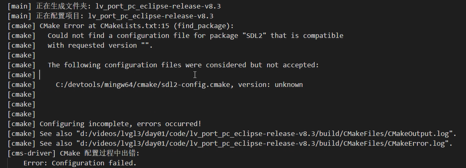</p><h4 data-lake-id="OpbSb" id="OpbSb"><span data-lake-id="ua8d562fd" id="ua8d562fd">下载SDL2源码</span></h4><p data-lake-id="uad3de8bb" id="uad3de8bb"><a data-lake-id="u6f61a84b" href="https://github.com/libsdl-org/SDL/releases/download/release-2.0.22/SDL2-devel-2.0.22-mingw.zip" id="u6f61a84b" rel="noopener noreferrer" target="_blank"><span data-lake-id="u973a7b61" id="u973a7b61">https://github.com/libsdl-org/SDL/releases/download/release-2.0.22/SDL2-devel-2.0.22-mingw.zip</span></a></p><h4 data-lake-id="prOCc" id="prOCc"><span data-lake-id="ucb332675" id="ucb332675">解压源码</span></h4><p data-lake-id="u62f7b6fb" id="u62f7b6fb"><span data-lake-id="u068a5052" id="u068a5052">将</span><code data-lake-id="uf3c5c928" id="uf3c5c928"><span data-lake-id="u93cbace5" id="u93cbace5">SDL2-devel-2.0.22-mingw.zip</span></code><span data-lake-id="u58294cf2" id="u58294cf2">解压，解压后目录如下：</span></p><p data-lake-id="u3ab5f675" id="u3ab5f675">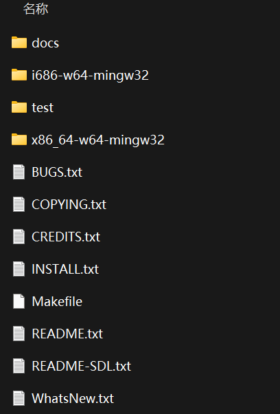</p><h4 data-lake-id="kWxWh" id="kWxWh"><span data-lake-id="u9fdb9f5f" id="u9fdb9f5f">下载cmake配置文件</span></h4><p data-lake-id="u3cdda4b9" id="u3cdda4b9"><a data-lake-id="u7345777e" href="https://github.com/libsdl-org/SDL/tree/SDL2/mingw/pkg-support/cmake" id="u7345777e" rel="noopener noreferrer" target="_blank"><span data-lake-id="u8277f67c" id="u8277f67c">https://github.com/libsdl-org/SDL/tree/SDL2/mingw/pkg-support/cmake</span></a></p><p data-lake-id="u1dce3615" id="u1dce3615"><span data-lake-id="ud383a9bf" id="ud383a9bf">下载 </span><code data-lake-id="u627feebf" id="u627feebf"><span data-lake-id="u70f88ec0" id="u70f88ec0">sdl2-config-version.cmake</span></code><span data-lake-id="u7874a45f" id="u7874a45f">和</span><code data-lake-id="u47dbf15a" id="u47dbf15a"><span data-lake-id="uda8ff8a5" id="uda8ff8a5">sdl2-config.cmake</span></code><span data-lake-id="uc088a338" id="uc088a338">两个文件。</span></p><p data-lake-id="ud9748035" id="ud9748035"><span data-lake-id="udafb5777" id="udafb5777">新建目录</span><code data-lake-id="u3c1c7b3b" id="u3c1c7b3b"><span data-lake-id="ua1c2ec26" id="ua1c2ec26">cmake</span></code><span data-lake-id="u8c2e1394" id="u8c2e1394">,将这两个文件放入到目录中。</span></p><p data-lake-id="u75930c17" id="u75930c17"><span data-lake-id="uac7201de" id="uac7201de">然后将</span><code data-lake-id="u349c37fb" id="u349c37fb"><span data-lake-id="ue1630daf" id="ue1630daf">cmake</span></code><span data-lake-id="uc7790456" id="uc7790456">目录，放入到SDL解压目录中，如下图所示：</span></p><p data-lake-id="uead6c855" id="uead6c855">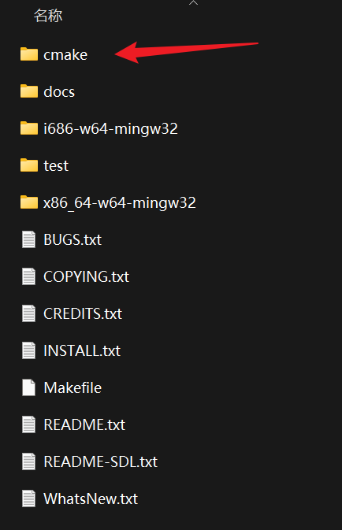</p><h4 data-lake-id="oc0Vp" id="oc0Vp"><span data-lake-id="ueef64b27" id="ueef64b27">备份SDL2.dll文件</span></h4><p data-lake-id="uf5fec703" id="uf5fec703"><span data-lake-id="u8083f002" id="u8083f002">来到</span><code data-lake-id="uc307db7a" id="uc307db7a"><span data-lake-id="ue82455ea" id="ue82455ea">SDL2-2.0.22\x86_64-w64-mingw32\bin</span></code><span data-lake-id="u04eff0b4" id="u04eff0b4">目录，备份</span><code data-lake-id="uc7ba8cbc" id="uc7ba8cbc"><span data-lake-id="ue2ff19cd" id="ue2ff19cd">SDL2.dll</span></code><span data-lake-id="u4042c414" id="u4042c414">文件，等待后续使用</span></p><h4 data-lake-id="PhnPe" id="PhnPe"><span data-lake-id="u4c06c55a" id="u4c06c55a">配置MinGW环境</span></h4><p data-lake-id="u1d520abf" id="u1d520abf"><span data-lake-id="u0e1cf69e" id="u0e1cf69e">拷贝</span><code data-lake-id="uff89a786" id="uff89a786"><span data-lake-id="uf3b35501" id="uf3b35501">SDL2-2.0.22</span></code><span data-lake-id="u47249cbc" id="u47249cbc">下的以下两个目录：</span></p><ul list="u6e4b7751"><li data-lake-id="u58b5a5e2" fid="u102013f2" id="u58b5a5e2"><span data-lake-id="u64f11cc4" id="u64f11cc4">cmake</span></li><li data-lake-id="u212a3ad6" fid="u102013f2" id="u212a3ad6"><span data-lake-id="u27734044" id="u27734044">x86_64-w64-mingw32</span></li></ul><p data-lake-id="ua7186b01" id="ua7186b01">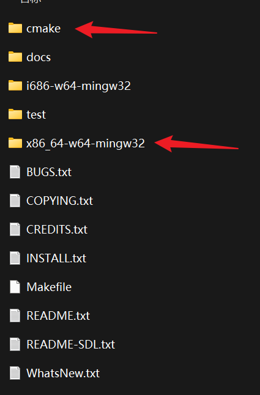</p><p data-lake-id="uec9f5a6f" id="uec9f5a6f"><span data-lake-id="u45831e5d" id="u45831e5d">来到MinGW的安装目录，将拷贝的这两个目录粘贴到此目录下，如下图：</span></p><p data-lake-id="u1711027c" id="u1711027c">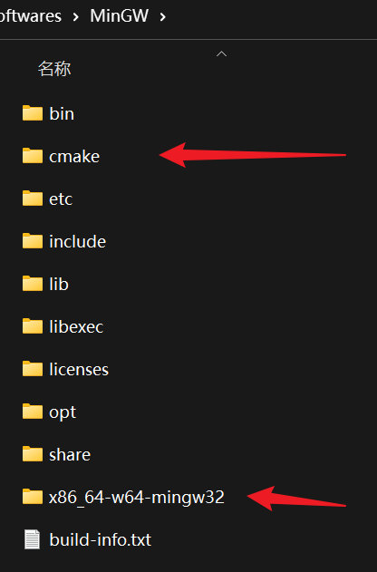</p><p data-lake-id="u97af7566" id="u97af7566"><br/></p><h3 data-lake-id="R6rZv" id="R6rZv"><span data-lake-id="ue1437af9" id="ue1437af9">问题及解决</span></h3><p data-lake-id="u8715d10b" id="u8715d10b"><br/></p><p data-lake-id="ud1500e53" id="ud1500e53"><strong><span class="lake-fontsize-12" data-lake-id="u56c832cf" id="u56c832cf">重要的事情说三遍：</span></strong></p><blockquote class="lake-alert lake-alert-success" data-lake-id="u00435bc3" id="u00435bc3"><p data-lake-id="ua36655b2" id="ua36655b2"><strong><span class="lake-fontsize-12" data-lake-id="ubc41fe11" id="ubc41fe11">先确保源码所在目录不包含</span></strong><strong><span class="lake-fontsize-18" data-lake-id="u5a1a609e" id="u5a1a609e" style="color: #DF2A3F">中文</span></strong><strong><span class="lake-fontsize-12" data-lake-id="u2e7ce8fa" id="u2e7ce8fa">和</span></strong><strong><span class="lake-fontsize-18" data-lake-id="u1a74a199" id="u1a74a199" style="color: #DF2A3F">空格</span></strong><strong><span class="lake-fontsize-12" data-lake-id="u29c159b8" id="u29c159b8">！！！</span></strong></p><p data-lake-id="u9cab75ee" id="u9cab75ee"><strong><span class="lake-fontsize-12" data-lake-id="uac8ea1eb" id="uac8ea1eb">先确保源码所在目录不包含</span></strong><strong><span class="lake-fontsize-18" data-lake-id="u2ec5db0e" id="u2ec5db0e" style="color: #DF2A3F">中文</span></strong><strong><span class="lake-fontsize-12" data-lake-id="ua19fcd43" id="ua19fcd43">和</span></strong><strong><span class="lake-fontsize-18" data-lake-id="u728fd570" id="u728fd570" style="color: #DF2A3F">空格</span></strong><strong><span class="lake-fontsize-12" data-lake-id="ue1f97631" id="ue1f97631">！！！</span></strong></p><p data-lake-id="ua7b47390" id="ua7b47390"><strong><span class="lake-fontsize-12" data-lake-id="u197b870d" id="u197b870d">先确保源码所在目录不包含</span></strong><strong><span class="lake-fontsize-18" data-lake-id="u232e31a2" id="u232e31a2" style="color: #DF2A3F">中文</span></strong><strong><span class="lake-fontsize-12" data-lake-id="uc6f33d94" id="uc6f33d94">和</span></strong><strong><span class="lake-fontsize-18" data-lake-id="uf704f439" id="uf704f439" style="color: #DF2A3F">空格</span></strong><strong><span class="lake-fontsize-12" data-lake-id="uef1f94f6" id="uef1f94f6">！！！</span></strong></p></blockquote><h4 data-lake-id="x8A6r" id="x8A6r"><span data-lake-id="u59f54528" id="u59f54528">编译报错</span></h4><p data-lake-id="u6d4e2aff" id="u6d4e2aff"><span class="lake-fontsize-12" data-lake-id="u21efd1c0" id="u21efd1c0">找不到</span><code data-lake-id="uc7d98071" id="uc7d98071"><span class="lake-fontsize-12" data-lake-id="u4f1ed8fa" id="u4f1ed8fa">"glob.h"</span></code></p><span class="yuque-card-unsupported">[codeblock]</span><p data-lake-id="u5fe00956" id="u5fe00956"><span class="lake-fontsize-12" data-lake-id="u7a48b994" id="u7a48b994">注释掉该头引用即可</span></p><p data-lake-id="u689d9b04" id="u689d9b04">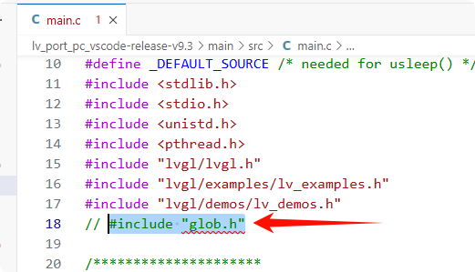</p><h4 data-lake-id="H4Ypt" id="H4Ypt"><span data-lake-id="u3c2b1416" id="u3c2b1416">没有GCC状态栏</span></h4><p data-lake-id="u2b792dee" id="u2b792dee"><span data-lake-id="u2daec8aa" id="u2daec8aa">VSCode左下角没有GCC设置状态栏</span></p><p data-lake-id="ua7cde47c" id="ua7cde47c">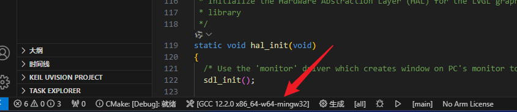</p><p data-lake-id="u3d8c6706" id="u3d8c6706"><strong><span data-lake-id="ufc4f8e70" id="ufc4f8e70">解决：</span></strong></p><p data-lake-id="uc7012657" id="uc7012657"><span data-lake-id="u795c8c1d" id="u795c8c1d">打开CMake Tools设置</span></p><p data-lake-id="u0f39d0a0" id="u0f39d0a0">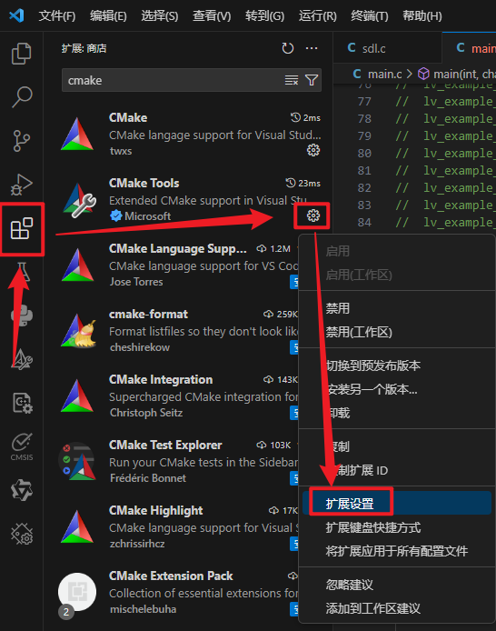</p><p data-lake-id="uf7830826" id="uf7830826"><span data-lake-id="ued869500" id="ued869500">添加 </span><code data-lake-id="uc75c3709" id="uc75c3709"><span data-lake-id="ue6c131d8" id="ue6c131d8">status</span></code><span data-lake-id="u31ef1c6e" id="u31ef1c6e"> 过滤，并将</span><code data-lake-id="u77a057c9" id="u77a057c9"><span data-lake-id="udc3d3ffe" id="udc3d3ffe">hidden</span></code><span data-lake-id="ua2ce11af" id="ua2ce11af">选项改成</span><code data-lake-id="ub8839581" id="ub8839581"><span data-lake-id="uf1640c6a" id="uf1640c6a">visible</span></code></p><p data-lake-id="uc8012e96" id="uc8012e96">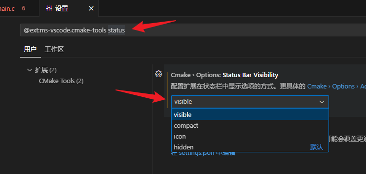</p><p data-lake-id="u2301f90e" id="u2301f90e"><br/></p><h4 data-lake-id="spU8h" id="spU8h"><span data-lake-id="u52ff88ba" id="u52ff88ba">扫描不到Mingw环境</span></h4><p data-lake-id="u659305aa" id="u659305aa"><span data-lake-id="uac40da07" id="uac40da07">按下</span><code data-lake-id="u21aca703" id="u21aca703"><span data-lake-id="u2b5cc96a" id="u2b5cc96a">F1</span></code><span data-lake-id="uf074292f" id="uf074292f">或</span><code data-lake-id="uddbda9cd" id="uddbda9cd"><span data-lake-id="u167ed410" id="u167ed410">Ctrl + Shift + P</span></code></p><p data-lake-id="ua5f0cc71" id="ua5f0cc71"><span data-lake-id="u4aaad6ad" id="u4aaad6ad">没有GCC</span></p><p data-lake-id="u3466791f" id="u3466791f">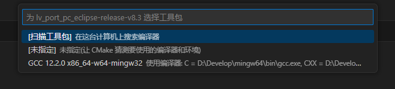</p><ol list="u3a2b756a"><li data-lake-id="ueae5d764" fid="u57ec0c5f" id="ueae5d764"><span data-lake-id="u32059d39" id="u32059d39">确保环境变量PATH中已经添加</span><code data-lake-id="u784617fe" id="u784617fe"><span data-lake-id="u1f8a82df" id="u1f8a82df">mingw64/bin</span></code><span data-lake-id="u60e82cf1" id="u60e82cf1">路径</span></li><li data-lake-id="u3aad6ef1" fid="u57ec0c5f" id="u3aad6ef1"><span data-lake-id="u673386f7" id="u673386f7">点击扫描工具包</span></li><li data-lake-id="ud3e216b4" fid="u57ec0c5f" id="ud3e216b4"><span data-lake-id="ubd6a9321" id="ubd6a9321">如果仍旧没出现，可重启VSCode或注销、重启电脑。</span></li></ol><p data-lake-id="ueb85ac4f" id="ueb85ac4f"><br/></p><h4 data-lake-id="Cvjvb" id="Cvjvb"><span data-lake-id="uebc46a17" id="uebc46a17">无法确定要使用的CMake生成器</span></h4><p data-lake-id="u5730168d" id="u5730168d"><span data-lake-id="u85bea4d7" id="u85bea4d7">无法确定要使用的 CMake 生成器。请安装或配置首选生成器，或更新 settings.json、工具包配置</span></p><p data-lake-id="u99b1a111" id="u99b1a111"><span data-lake-id="uda3f665f" id="uda3f665f">Error: 找不到任何可用的生成器。</span></p><p data-lake-id="u6a0a3d58" id="u6a0a3d58">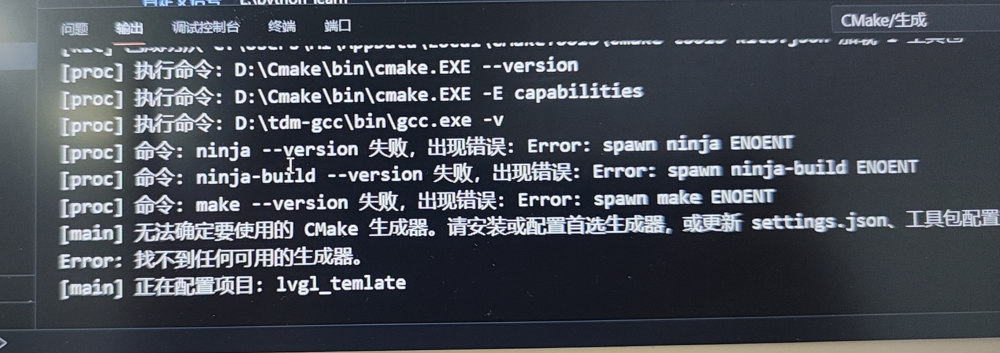</p><p data-lake-id="u80b2f7d4" id="u80b2f7d4">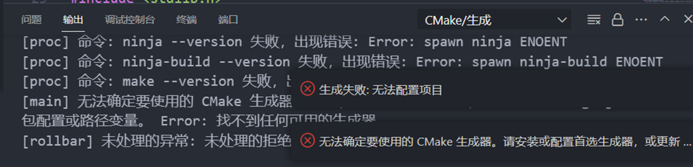</p><p data-lake-id="u245d1104" id="u245d1104"><strong><span data-lake-id="u528fe744" id="u528fe744">解决：</span></strong></p><ol list="u562f2811"><li data-lake-id="u80d240a2" fid="u69e37008" id="u80d240a2"><span data-lake-id="u8af045e8" id="u8af045e8">确保</span><code data-lake-id="uf0f62e9c" id="uf0f62e9c"><span data-lake-id="ufc5f3521" id="ufc5f3521">gcc -v</span></code><span data-lake-id="u88736044" id="u88736044">是12.2.0以上版本</span></li><li data-lake-id="ua2a5382d" fid="u69e37008" id="ua2a5382d"><span data-lake-id="u6d1c69a2" id="u6d1c69a2">确保</span><code data-lake-id="ucd105a60" id="ucd105a60"><span data-lake-id="u18d497a9" id="u18d497a9">cmake --version</span></code><span data-lake-id="ua9be5964" id="ua9be5964">不报错</span></li><li data-lake-id="u381267dd" fid="u69e37008" id="u381267dd"><span data-lake-id="uebab19d8" id="uebab19d8">按照如下引导配置Cmake插件</span></li></ol><p data-lake-id="ufed5924f" id="ufed5924f">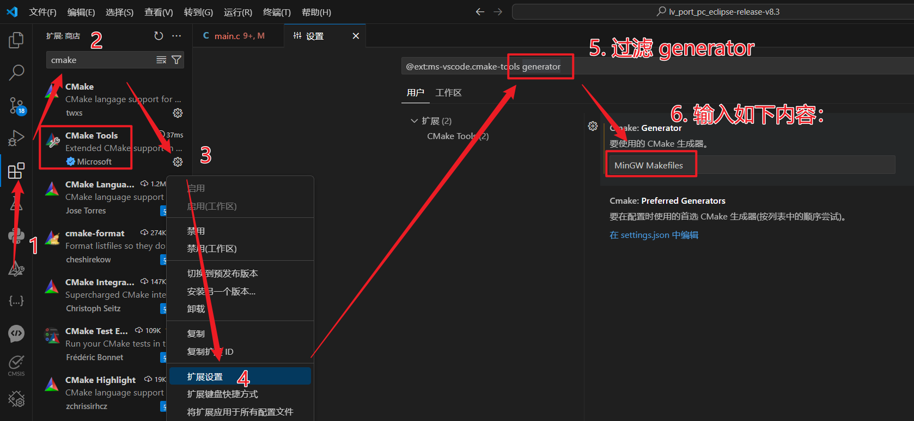</p><p data-lake-id="ud5079074" id="ud5079074"><span data-lake-id="u322fe694" id="u322fe694">给Cmake插件的Generator生成器配置如下内容：</span></p><span class="yuque-card-unsupported">[codeblock]</span><details class="lake-collapse" data-lake-id="ud266b810" id="ud266b810" open="false"><summary class="lake-summary" data-lake-id="ua6cf4272" id="ua6cf4272"><span data-lake-id="udee1ecd6" id="udee1ecd6">如果有多个版本的MinGW环境，解决方式点左边箭头展开。</span></summary><blockquote class="lake-alert lake-alert-color3" data-lake-id="u2168b771" id="u2168b771"><p data-lake-id="ud76524e2" id="ud76524e2"><span data-lake-id="u612e5314" id="u612e5314">注：</span></p><p data-lake-id="ub1f57820" id="ub1f57820"><span data-lake-id="ub0f9b258" id="ub0f9b258">如果有多个版本的MinGW环境，可以将系统变量Path路径里新版本的MinGW的bin路径放最上边，以保证gcc用的是最新版本。如下：</span></p></blockquote><p data-lake-id="ua20baacd" id="ua20baacd">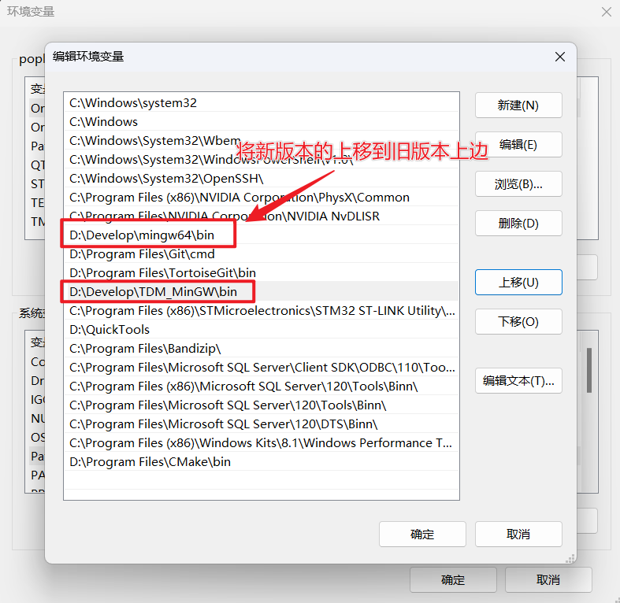</p></details><p data-lake-id="u08b5bd9e" id="u08b5bd9e"><br/></p><h4 data-lake-id="yZriL" id="yZriL"><span data-lake-id="u3d8b805e" id="u3d8b805e">CMake Error</span></h4><p data-lake-id="u3b7941cb" id="u3b7941cb"><span data-lake-id="u4481038e" id="u4481038e">CMake Error: Target DependInfo.cmake file not found</span></p><p data-lake-id="u017edfe6" id="u017edfe6">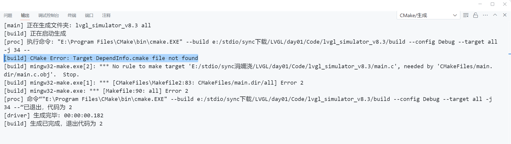</p><p data-lake-id="u06928ba0" id="u06928ba0"><br/></p><span class="yuque-card-unsupported">[codeblock]</span><p data-lake-id="uec3d06f1" id="uec3d06f1"><br/></p><p data-lake-id="u6a7b2f27" id="u6a7b2f27"><span data-lake-id="u5e0c6a12" id="u5e0c6a12">把项目放到不包含中文和空格的目录，</span><strong><span data-lake-id="udfac348e" id="udfac348e">删除build文件夹</span></strong><span data-lake-id="u3e114159" id="u3e114159">，再进行编译生成</span></p><p data-lake-id="u4a8a6dc4" id="u4a8a6dc4"><span data-lake-id="u8bcb7b1b" id="u8bcb7b1b">​</span><br/></p><h4 data-lake-id="qHFsg" id="qHFsg"><span data-lake-id="uc1596870" id="uc1596870">CMake配置项目失败</span></h4><p data-lake-id="u583ba53a" id="u583ba53a">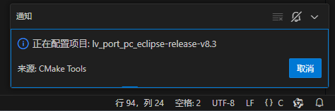</p><p data-lake-id="u0dde84cf" id="u0dde84cf">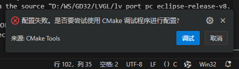</p><p data-lake-id="uab531e2a" id="uab531e2a"><strong><span data-lake-id="u254f019c" id="u254f019c">解决：</span></strong></p><p data-lake-id="ua407f2b0" id="ua407f2b0"><span data-lake-id="ub549717c" id="ub549717c">删除Build目录，重新编译生成</span></p><p data-lake-id="u1a03cb4a" id="u1a03cb4a">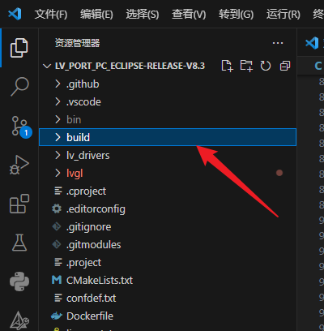</p><p data-lake-id="u8689e35f" id="u8689e35f"><br/></p><h4 data-lake-id="MbMJZ" id="MbMJZ"><span data-lake-id="ua108b483" id="ua108b483">重置CMake技巧</span></h4><p data-lake-id="ua4d97106" id="ua4d97106"><span data-lake-id="u844c75e2" id="u844c75e2">尝试使用如下方式可以重置cmake的编译环境，可解决很多编译异常问题</span></p><p data-lake-id="u24a0035e" id="u24a0035e"><span data-lake-id="u5f2dbd60" id="u5f2dbd60">按</span><code data-lake-id="u0596243b" id="u0596243b"><span data-lake-id="u72f7f882" id="u72f7f882">F1</span></code><span data-lake-id="uc20776c0" id="uc20776c0">或</span><code data-lake-id="ubde28f95" id="ubde28f95"><span data-lake-id="u9ea2f270" id="u9ea2f270">Ctrl + Shift + P</span></code><span data-lake-id="u64c6fd8a" id="u64c6fd8a">输入</span><code data-lake-id="u48f90471" id="u48f90471"><span data-lake-id="uacd76fdb" id="uacd76fdb">cmake reset</span></code><span data-lake-id="u923c26db" id="u923c26db">，按回车即可</span></p><p data-lake-id="u0482b91e" id="u0482b91e">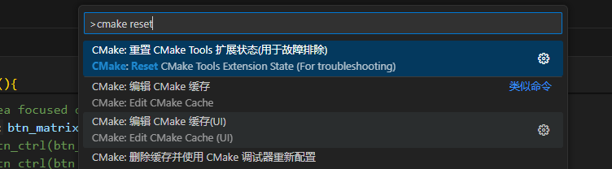</p><p data-lake-id="u6ff1f2b2" id="u6ff1f2b2"><span data-lake-id="u2343343b" id="u2343343b">然后删除Build目录</span></p><p data-lake-id="u140a1d99" id="u140a1d99"><span data-lake-id="u8547d508" id="u8547d508">重新点选GCC环境</span></p><p data-lake-id="u48e5e085" id="u48e5e085">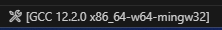</p><p data-lake-id="u15d7cca3" id="u15d7cca3"><span data-lake-id="u4113f896" id="u4113f896">然后点击生成</span></p><p data-lake-id="ub5bb6d44" id="ub5bb6d44"></p><p data-lake-id="u9dcf7acd" id="u9dcf7acd"><br/></p><h4 data-lake-id="Ia40Q" id="Ia40Q"><span data-lake-id="u572b513b" id="u572b513b">无法输出日志</span></h4><p data-lake-id="ua88f0d32" id="ua88f0d32"><span data-lake-id="u578252dd" id="u578252dd">在windows下运行，需要让exe程序阻塞控制台，否则无法看到日志。</span></p><p data-lake-id="u2dab554f" id="u2dab554f"><span data-lake-id="ude0773d5" id="ude0773d5">打开</span><code data-lake-id="uaaea0d84" id="uaaea0d84"><span data-lake-id="uad582fad" id="uad582fad">CMakeLists.txt</span></code><span data-lake-id="uc4d21ac2" id="uc4d21ac2">，添加如下代码：</span></p><span class="yuque-card-unsupported">[codeblock]</span><h4 data-lake-id="GOX3Z" id="GOX3Z"><span data-lake-id="u0ae1086e" id="u0ae1086e">代码不能提示和跳转</span></h4><p data-lake-id="ue73c2a1e" id="ue73c2a1e"><span data-lake-id="ubc0838b0" id="ubc0838b0">可能是C++的Intelli Sense引擎没打开，并建议禁用clangd</span></p><ol list="u1cce3458"><li data-lake-id="u78b08917" fid="u7051094c" id="u78b08917"><span data-lake-id="u34cb27c2" id="u34cb27c2">禁用clangd</span></li></ol><p data-lake-id="u673a6134" id="u673a6134">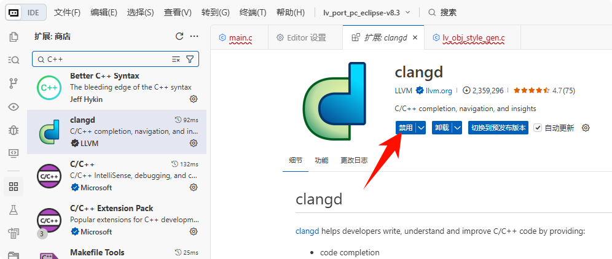</p><p data-lake-id="u7b9d4e8b" id="u7b9d4e8b"><span data-lake-id="uad3d2036" id="uad3d2036">如果不禁用，会造成</span><code data-lake-id="u78988624" id="u78988624"><span data-lake-id="u8bb827da" id="u8bb827da">C/C++插件</span></code><span data-lake-id="u4122d0ad" id="u4122d0ad">和</span><code data-lake-id="u2d41a99f" id="u2d41a99f"><span data-lake-id="ua6bb50b3" id="ua6bb50b3">clangd插件</span></code><span data-lake-id="u9a554597" id="u9a554597">冲突，然后你就会错误地把IntelliSense禁用了</span></p><p data-lake-id="u0fade073" id="u0fade073">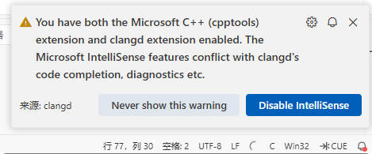</p><p data-lake-id="u93e3554c" id="u93e3554c"><span data-lake-id="ue5e111ed" id="ue5e111ed">​</span><br/></p><ol list="u1d08f736" start="2"><li data-lake-id="u75a82aae" fid="u3933e7ec" id="u75a82aae"><span data-lake-id="ue3e90f96" id="ue3e90f96">按照如下步骤，选择default打开Intelli Sense.</span></li></ol><p data-lake-id="uc3814c8d" id="uc3814c8d">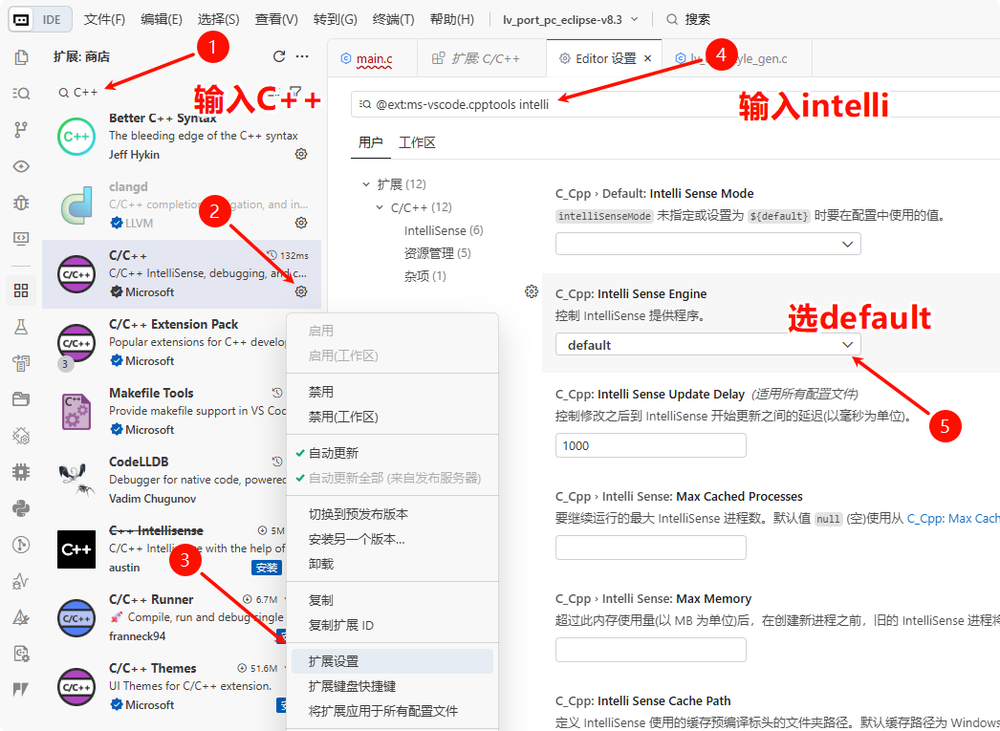</p><ol list="u378353d9" start="3"><li data-lake-id="u2bee33d9" fid="uab969534" id="u2bee33d9"><span data-lake-id="uc09989d5" id="uc09989d5">重建索引</span></li></ol><p data-lake-id="u6d35a072" id="u6d35a072">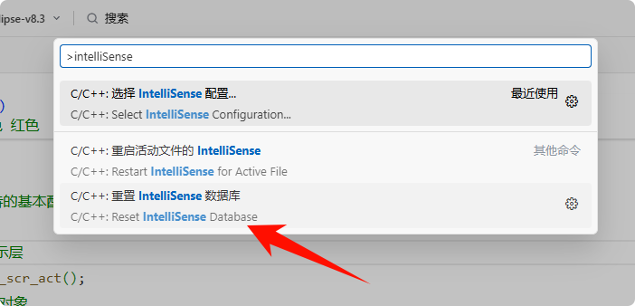</p><h2 data-lake-id="G7IS3" id="G7IS3"><span data-lake-id="u8ab61970" id="u8ab61970">练习题</span></h2><ul list="u542b275c"><li data-lake-id="u04f459b5" fid="ua4548194" id="u04f459b5"><span data-lake-id="ubb27cf7d" id="ubb27cf7d">搭建lvgl模拟器开发环境</span></li></ul><p data-lake-id="u785fa278" id="u785fa278"><span data-lake-id="u1fa41db5" id="u1fa41db5">​</span><br/></p>